Metabolomics data pre-treatment
metabolyseR v0.14.3
Jasen Finch
14 September, 2021
Source:vignettes/pre_treatment.Rmd
pre_treatment.RmdIntroduction
Metabolomics data from any analytical technique requires various data pre-treatment steps prior to subsequent data mining or other downstream analyses. This aids both the data quality and integrity. It is important that appropriate pre-treatment strategies are used not only for the analytical technique being applied but are also suitable for the statistical or machine learning analyses that are to be utilised. Careful consideration of the pre-treatment steps to be undertaken are required as they can have a substantial influence on the results and inferences taken from metabolomic analyses.
Data pre-treatment is the most faceted aspect of the analysis elements in metabolyseR. It is itself made up of a number of elements, which themselves are made up of methods. The following document will outline the application of each of these pre-treatment elements for use in exploratory analyses then outline how to apply them in routine analyses. For an introduction to the usage of metabolyseR for both exploratory and routine analyses, see the introduction vignette using:
vignette('introduction','metabolyseR')To further supplement this document, a quick start example analysis is also available as a vignette:
vignette('quick_start','metabolyseR')To begin, the package can be loaded using:
library(metabolyseR)
#>
#> Attaching package: 'metabolyseR'
#> The following object is masked from 'package:stats':
#>
#> anova
#> The following objects are masked from 'package:base':
#>
#> raw, splitExample data
The examples used here will use the abr1 data set from the metaboData package. This is nominal mass flow-injection mass spectrometry (FI-MS) fingerprinting data from a plant-pathogen infection time course experiment. The pipe %>% from the magrittr package will also be used. The example data can be loaded using:
library(metaboData)Only the negative acquisition mode data (abr1$neg) will be used along with the sample meta-information (abr1$fact). Create an AnalysisData class object, assigned to the variable d, using the following:
d <- analysisData(abr1$neg,abr1$fact)print(d)
#>
#> AnalysisData object containing:
#>
#> Samples: 120
#> Features: 2000
#> Info: 9As can be seen above the data set contains a total of 120 samples and 2000 features.
Parallel processing
The package supports parallel processing using the future package.
By default, processing by metabolyseR will be done seqentially. However, parallel processing can be activated, prior to analysis, by specifying a parallel implementation using plan(). The following example specifies using the multisession implementation (muliple background R sessions) with two worker processes.
plan(future::multisession,workers = 2)See the future package documentation for more information on the types of parallel implementations that are available.
Pre-treatment elements
The following sections will outline the numerous pre-treatment elements available within metabolyseR. There will be examples of their application during exploratory analyses along with useful visualisations. These can aid interpretation of when particular treatments should be applied as well as their effect once they have been used.
Removal of samples, classes or features
In many situations, it will be necessary to exclude either individual samples, sample classes or certain features from further analysis.
Individual samples can be removed using removeSamples() as below, where the idx argument stipulates the sample information column cotaining the sample indexes and the samples argument a vector of sample indexes to remove.
d %>%
removeSamples(idx = 'injorder',samples = 1)
#>
#> AnalysisData object containing:
#>
#> Samples: 119
#> Features: 2000
#> Info: 9The removeClasses function can be used similarly to remove whole classes from further analysis:
d %>%
removeClasses(cls = 'day',classes = 'H')
#>
#> AnalysisData object containing:
#>
#> Samples: 100
#> Features: 2000
#> Info: 9The following will enable the removal of specified features as a vector supplied to the features argument:
d %>%
removeFeatures(features = c('N1','N2'))
#>
#> AnalysisData object containing:
#>
#> Samples: 120
#> Features: 1998
#> Info: 9There could be occasions where the numbers of samples, classes or features to remove are greater than the numbers of samples, classes or features that are to be retained. In these situations it will be more convenient to directly specify the samples, classes or features to retain. Keeping samples, classes or features is outlined in the following section.
Keeping samples, classes or features
Often it will be necessary to retain only particular samples, sample classes or certain features for further analysis.
Individual samples can be kept using keepSamples() as below, where the idx argument stipulates the sample information column cotaining the sample indexes and the samples argument, a vector of sample indexes to keep.
d %>%
keepSamples(idx = 'injorder',samples = 1)
#>
#> AnalysisData object containing:
#>
#> Samples: 1
#> Features: 2000
#> Info: 9The keepClasses() method can be used similarly to keep whole classes for further analysis:
d %>%
keepClasses(cls = 'day',classes = 'H')
#>
#> AnalysisData object containing:
#>
#> Samples: 20
#> Features: 2000
#> Info: 9The following will specify features to keep, with a vector of feature names supplied to the features argument:
d %>%
keepFeatures(features = c('N1','N2'))
#>
#> AnalysisData object containing:
#>
#> Samples: 120
#> Features: 2
#> Info: 9There are likely to be occasions where the numbers of samples, classes or features to keep are greater than the numbers of samples, classes or features that are to be excluded. In these situations it will be more convenient to directly specify the samples, classes or features to remove. Removing samples, classes or features is outlined in the previous section.
Feature filtering based on occupancy
Occupancy provides a useful metric by which to filter poorly represented features (features containing a majority zero or missing values). An occupancy threshold provides a means of specifying this majority with variables below the threshold excluded from further analyses. However, this can be complicated by an underlying class structure present within the data where a variable may be well represented within one class but not in another.
The proportional occupancy for each feature within a data set for a given class structure can be calculated using the occupancy() method, specifying the sample information column using the cls argument.
d %>%
occupancy(cls = 'day')
#> # A tibble: 11,914 × 5
#> day Feature N `Class total` Occupancy
#> <fct> <chr> <dbl> <int> <dbl>
#> 1 1 N1 0 20 0
#> 2 1 N10 0 20 0
#> 3 1 N100 0 20 0
#> 4 1 N1000 20 20 1
#> 5 1 N1001 20 20 1
#> 6 1 N1002 20 20 1
#> 7 1 N1003 20 20 1
#> 8 1 N1004 20 20 1
#> 9 1 N1005 20 20 1
#> 10 1 N1006 20 20 1
#> # … with 11,904 more rowsAlternatively the occupancy distributions can be plotted providing a useful overview of the data set:
d %>%
plotOccupancy(cls = 'day')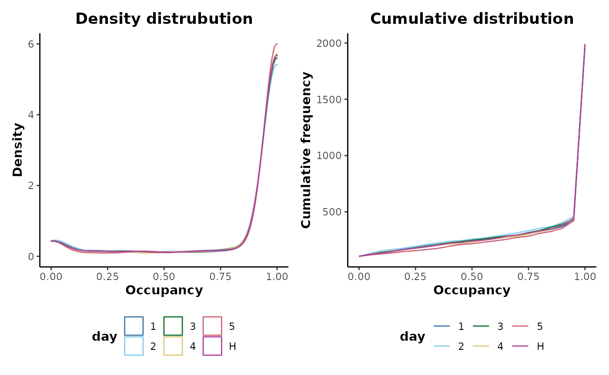
It can be seen that there are a number of unoccupied features across all the sample classes with a small rise in the density distribution near 0.
There are two strategies for thresholding occupancy. The first is a maximum theshold; where the maximum occupancy across all classes is above the threshold. Therefore, for a feature to be retained, only a single class needs to have an occupancy above the threshold. It is this strategy that will be appropriate for most applications. A two-thirds maximum occupancy filter can be applied to the day sample information column of our data using:
maximum_occupancy_filtered <- d %>%
occupancyMaximum(cls = 'day',occupancy = 2/3)It can be seen below that this removes 240 features.
print(maximum_occupancy_filtered)
#>
#> AnalysisData object containing:
#>
#> Samples: 120
#> Features: 1760
#> Info: 9Plotting the occupancy distributions shows that all the low occupancy features have now been removed.
maximum_occupancy_filtered %>%
plotOccupancy(cls = 'day')
The alternative strategy is by applying a minimum threshold; where the minimum occupancy across all classes is required to be above the threshold. Therefore, for a feature to be retained, all classes would need to have an occupancy above the threshold. A two-thirds minimum occupancy filter can be applied to the day sample information column of our data using:
minimum_occupancy_filtered <- d %>%
occupancyMinimum(cls = 'day',occupancy = 2/3)It can be seen below that this removes 344 features.
print(minimum_occupancy_filtered)
#>
#> AnalysisData object containing:
#>
#> Samples: 120
#> Features: 1656
#> Info: 9Data transformation
Prior to downstream analyses, metabolomics data often require transformation to fulfill the assumptions of a particular statistical/data mining technique.
There are a wide range of transformation methods available that are commonly used for the analysis of metabolomics data. These methods are all named with the prefix transform.
The effects of a transformation on a data set can be assessed using a supervised classifcation approach. The following performs a supervised random forest analysis of the example data and plots the results using both multidimensional scaling (MDS) and reciever operator characteristic (ROC) curves.
d %>%
plotSupervisedRF(cls = 'day')
Alternatively a log10 transformation can be applied prior to analysis:
d %>%
transformLog10() %>%
plotSupervisedRF(cls = 'day')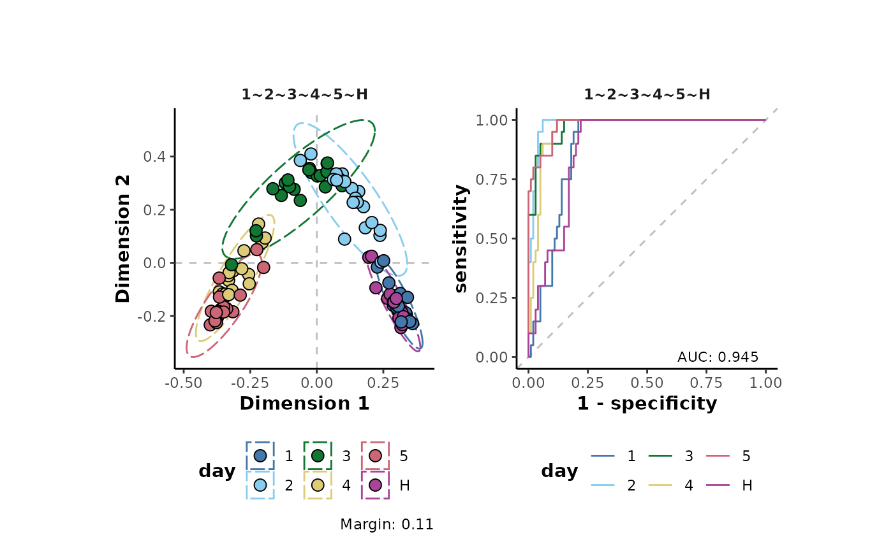
Or a total ion count (TIC) normalisation where each individual sample is corrected by its TIC. This is one method that can be used to account for small variablility in sample concentration.
d %>%
transformTICnorm() %>%
plotSupervisedRF(cls = 'day')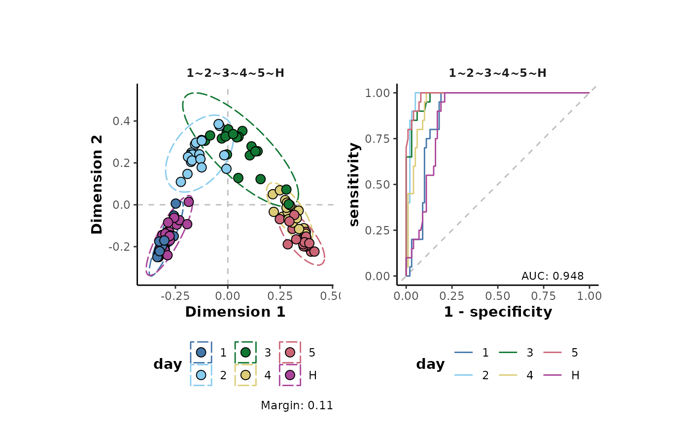
The margin value is a metric that can be used to assess model perfomance. Positive values indicate a models ability, on average, to correctly predict the class labels of the analysed data.
As can be seen in the plots above, the transformations have little effect on the overall structure of the data set. However, there are small increases in the margins of the transformed data (model improvement). Note that here, a non-parametric machine learning approach has been applied to assess the effects of the transformations on the data. Using a different approach such as the parametric analysis Of variance (ANOVA) which different underlying assumptions will likely give different results to the assessment above.
Sample aggregation
Sample aggregation allows the electronic pooling of samples based on a grouping variable. This is useful in situations such as the presence of technical replicates that can be aggregated to reduce the effects of pseudo replication. metabolyseR provides methods for mean, median and sum aggregation and each starts with the aggregate prefix.
Below shows a principle component analysis (PCA) plot of the example data coloured by the classes of the day sample information column. It is first maximum occupancy filtered to remove empty features.
d %>%
occupancyMaximum(cls = 'day') %>%
plotPCA(cls = 'day')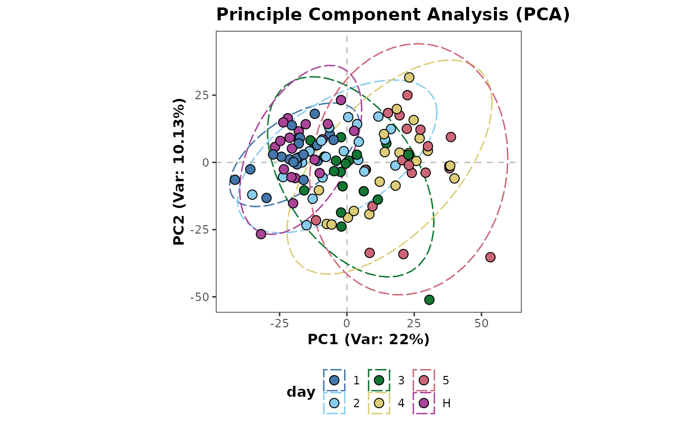
The example below shows the mean aggregation of the data using the experimental classes within the day sample information column.
day_mean <- d %>%
occupancyMaximum(cls = 'day') %>%
aggregateMean(cls = 'day')The PCA plot below shows these class averages of the data.
plotPCA(day_mean,cls = 'day',ellipses = FALSE)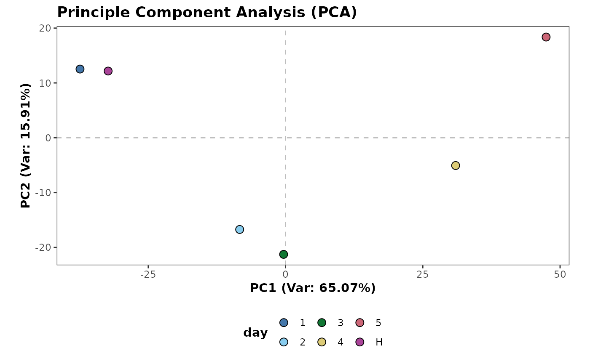
Batch/block correction
There can sometimes be artificial batch related variability introduced into metabolomics analyses as a result of analytical instrumentation or sample preparation. With appropriate sample randomisation (see section on feature filtering based on QC samples), batch related variability can be corrected for using an average centring correction method, applied to the individual features.
The plot below shows differences in the TIC distributions for each of the classes in the day sample information column.
d %>%
plotTIC(by = 'day',colour = 'day')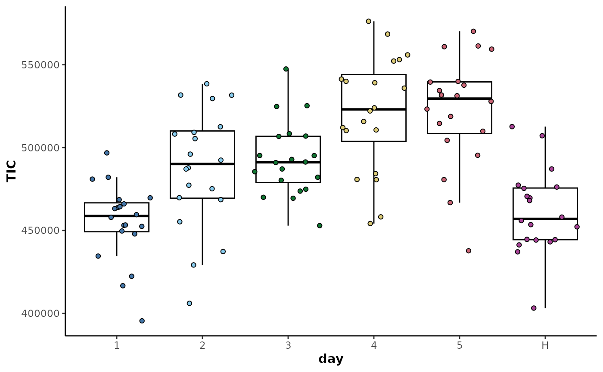
The data can then be corrected by class average centring as shown below.
corrected_data <- d %>%
correctionCenter(block = 'day',type = 'median')The plot of the TICs below shows that the inter-class variability has been removed but the intra-class variability has been retained.
plotTIC(corrected_data,
by = 'day',
colour = 'day')
Imputation of missing data
Missing values can have an important influence on downstream analyses with zero values heavily influencing the outcomes of parametric tests. Where and how they are imputed are important considerations and this is highly related to variable occupancy. The methods provided here allow both these aspects to be taken into account and utilise Random Forest imputation using the missForest package.
Below shows a Linear Discriminant Analysis (LDA) plot of the example data. The eigenvalue (Tw) gives a comparable indication of the separation between the sample classes.
d %>%
keepClasses(cls = 'day',classes = c('H','5')) %>%
occupancyMaximum(cls = 'day',occupancy = 2/3) %>%
plotLDA(cls = 'day')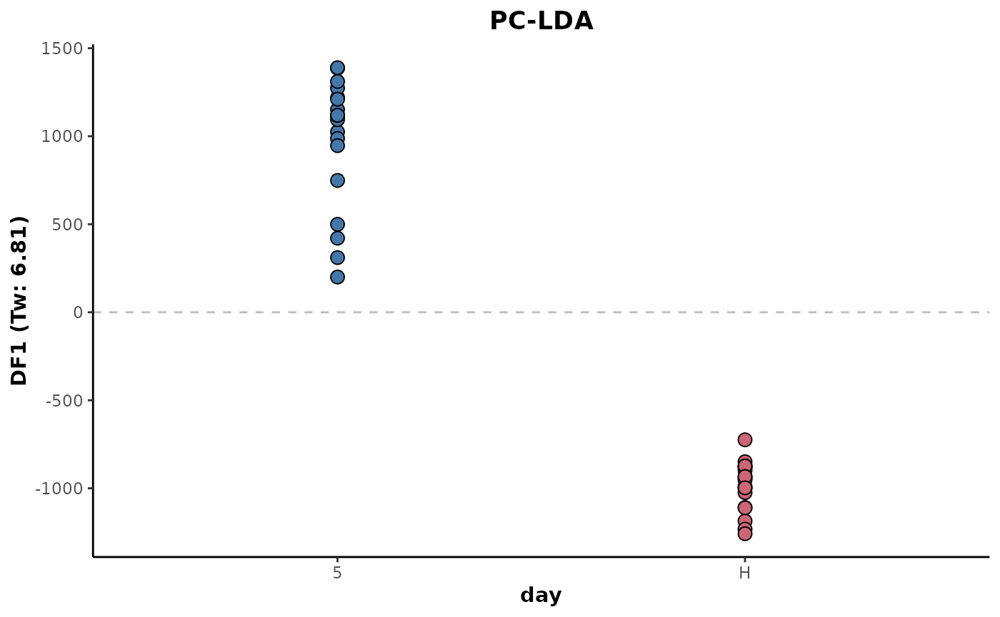
The following shows the same, except there is an application of imputation prior to the LDA. The imputed data is based on the data of all the samples present on the data set. It shows a very slight drop in the eigenvalue and therefore reduced separation between the sample classes.
d %>%
keepClasses(cls = 'day',classes = c('H','5')) %>%
occupancyMaximum(cls = 'day',occupancy = 2/3) %>%
imputeAll(parallel = 'variables') %>%
plotLDA(cls = 'day')Imputation accuracy is likely to be reduced if data is sparse or there is underlying class structure where there is significant discrimination. Below shows the application imputation prior the LDA, except this time the imputation is class-wise. The imputed data is based only on the values of other samples within the class.
d %>%
keepClasses(cls = 'day',classes = c('H','5')) %>%
occupancyMaximum(cls = 'day',occupancy = 2/3) %>%
imputeClass(cls = 'day') %>%
plotLDA(cls = 'day')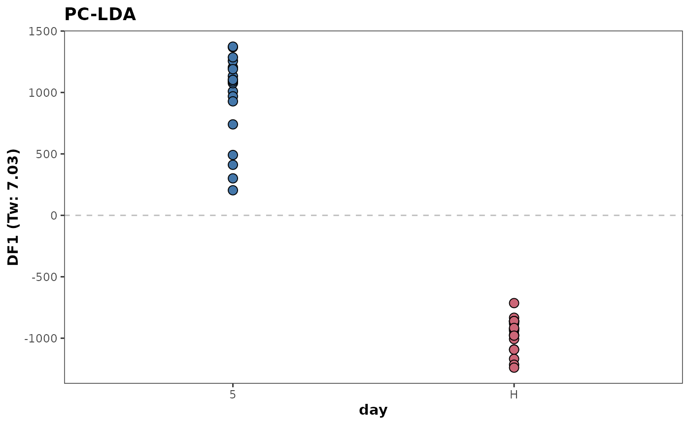
This shows a slight increase in the eigenvalue with the classes showing greater separation. This is likely due to the increased accuracy of the imputed data relative to the class structure.
Feature filtering based on quality control (QC) samples
A QC sample is an average pooled sample, equally representative in composition of all the samples present within an experimental set. Within an analytical run, the QC sample is analysed at equal intervals throughout the run. If there is class structure within the run, this should be randomised within a block fashion so that the classes are equally represented in each block throughout the run. A QC sample can then be injected and analysed between these randomised blocks. This provides a set of technical injections that allows the variability in instrument performance over the run to be accounted for and the robustness of the acquired variables to be assessed.
The technical reproducibility of an acquired variable can be assessed using it’s relative standard deviation (RSD) within the QC samples. The variable RSDs can then be filtered below a threshold value to remove metabolome features that are poorly reproducible across the analytical runs. This variable filtering strategy has an advantage over that of occupancy alone as it is not dependent on underlying class structure. Therefore, the variables and variable numbers will not alter if a new class structure is imposed upon the data.
The example data set does not include QC samples. For this example, the H class will be used.
Firstly, the RSD distribution will be assessed for the only H class. The following retains only the H class samples to aid visualisation.
QC <- d %>%
keepClasses(cls = 'day',classes = 'H')The table of RSD values for each of the features can be computed as below.
QC %>%
rsd(cls = 'day')
#> # A tibble: 2,000 × 5
#> day Feature Mean SD RSD
#> <fct> <chr> <dbl> <dbl> <dbl>
#> 1 H N1 0 0 NaN
#> 2 H N10 0 0 NaN
#> 3 H N100 0 0 NaN
#> 4 H N1000 114. 19.4 17.0
#> 5 H N1001 99.2 21.6 21.7
#> 6 H N1002 86.7 23.9 27.6
#> 7 H N1003 82.3 18.0 21.9
#> 8 H N1004 91.6 18.8 20.5
#> 9 H N1005 78.2 14.0 17.9
#> 10 H N1006 78.6 21.3 27.1
#> # … with 1,990 more rowsThe distributions of the feature RSD values can be plotted for the H class.
QC %>%
plotRSD(cls = 'day')
#> Warning: Removed 123 rows containing non-finite values (stat_density).
#> Warning: Removed 1 row(s) containing missing values (geom_path).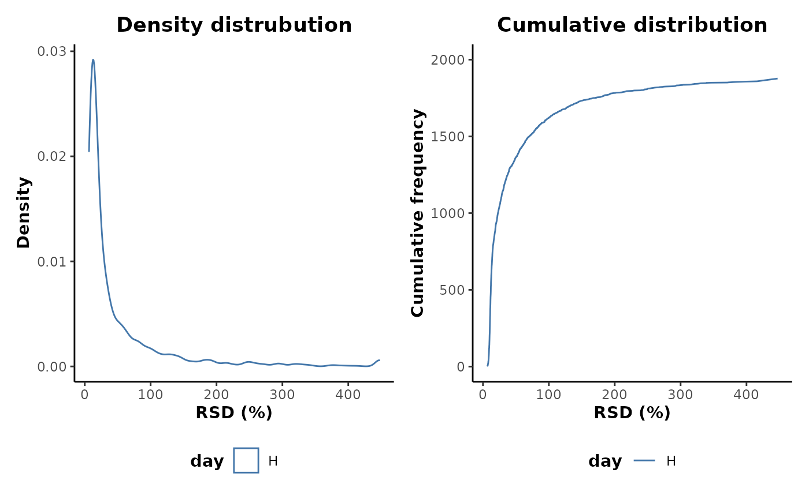
This shows that there are a number of features with very high RSD values and therefore poor analytical robustness. Many of these are likely to be as a result of poor occupancy and zero values. Applying an occupancy filter prior to plotting does indeed show a reduction in the upper range of RSD values retained.
QC %>%
occupancyMaximum(cls = 'day',occupancy = 2/3) %>%
plotRSD(cls = 'day')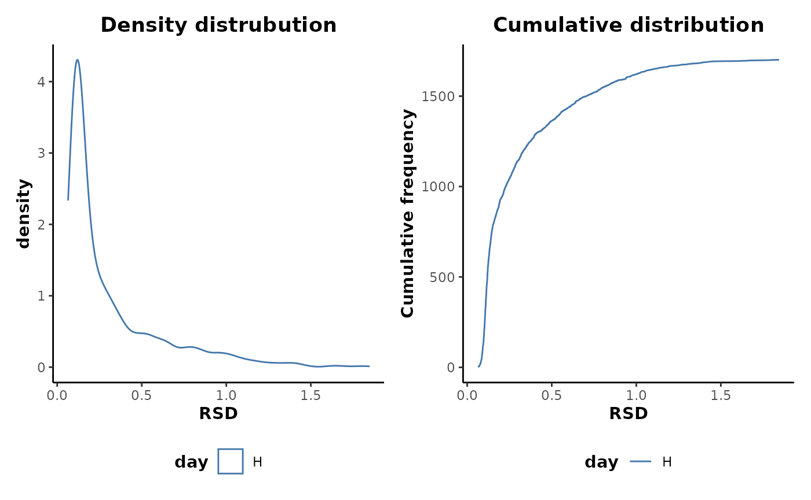
metabolyseR contains a number of methods for applying pre-treatment routines specifically on QC samples and are all prefixed with QC. These include methods for feature filtering of a data set based the occupancy of the QC class, imputation of the QC class only, feature filtering based in the RSD values of the QC class and removal of only the QC class.
Below shows an example of applying some of these QC methods. This will first filter the features in the data set based on the occupancy of the QC class. Then the features are filtered based on the RSD values of the QC class using an RSD threshold of 50%. The class index of the QC samples is specified using the QCidx argument.
QC_filtered <- d %>%
QCoccupancy(cls = 'day',QCidx = 'H',occupancy = 2/3) %>%
QCrsdFilter(cls = 'day',QCidx = 'H',RSDthresh = 50)This removes a total of 637 features.
print(QC_filtered)
#>
#> AnalysisData object containing:
#>
#> Samples: 120
#> Features: 1363
#> Info: 9Routine analyses
For routine analyses, the available pre-treatment elements can retreived using:
preTreatmentElements()
#> [1] "aggregate" "correction" "impute" "keep"
#> [5] "occupancyFilter" "QC" "remove" "transform"The available methods for a specified pre-treatment element can be viewed using:
preTreatmentMethods('remove')
#> [1] "classes" "features" "samples"The default pre-treatment parameters can first be assigned to the variable p.
p <- analysisParameters('pre-treatment')The preTreatmentParameters() function allows the parameters for particular pre-treatment elements to be specified. The following specifies the pre-treatment elements that will be used for this data set. These will include the keeping of certain sample classes, the filtering of features based on class occupancy and the application of a TIC normalisation. These will be assigned to the p variable using the parameters() method.
parameters(p,'pre-treatment') <- preTreatmentParameters(
list(
keep = 'classes',
occupancyFilter = 'maximum',
transform = 'TICnorm'
)
)Printing p shows these pre-treatment steps.
print(p)
#> Parameters:
#> pre-treatment
#> keep
#> classes
#> cls = class
#> classes = c()
#> occupancyFilter
#> maximum
#> cls = class
#> occupancy = 2/3
#> transform
#> TICnormNext, the day sample information column can be specified, along with the classes to be kept which will be the H, the 1 and the 2 classes.
changeParameter(p,'cls') <- 'day'
changeParameter(p,'classes') <- c('H','1','2')Printing p shows the final pre-treatment parameters that will be used for this analysis.
print(p)
#> Parameters:
#> pre-treatment
#> keep
#> classes
#> cls = day
#> classes = c("H", "1", "2")
#> occupancyFilter
#> maximum
#> cls = day
#> occupancy = 2/3
#> transform
#> TICnormThe pre-treatment routine can then be executed.
analysis <- metabolyse(abr1$neg,abr1$fact,p)
#>
#> metabolyseR v0.14.3 Tue Sep 14 10:04:55 2021
#> ________________________________________________________________________________
#> Parameters:
#> pre-treatment
#> keep
#> classes
#> cls = day
#> classes = c("H", "1", "2")
#> occupancyFilter
#> maximum
#> cls = day
#> occupancy = 2/3
#> transform
#> TICnorm
#> ________________________________________________________________________________
#> Pre-treatment …
Pre-treatment ✓ [9.7S]
#> ________________________________________________________________________________
#>
#> Complete! [9.8S]Printing the analysis object shows the resulting data from the pre-treatment routine.
print(analysis)
#>
#> metabolyseR v0.14.3
#> Analysis:
#> Tue Sep 14 10:04:55 2021
#>
#> Raw Data:
#> No. samples = 120
#> No. features = 2000
#>
#> Pre-treated Data:
#> Tue Sep 14 10:05:04 2021
#> No. samples = 60
#> No. features = 1723The pre-treated data can be extracted from the Analysis object using several methods.
Firstly the analysisResults() method.
analysisResults(analysis,'pre-treatment')
#>
#> AnalysisData object containing:
#>
#> Samples: 60
#> Features: 1723
#> Info: 9And secondly the preTreated() method.
preTreated(analysis)
#>
#> AnalysisData object containing:
#>
#> Samples: 60
#> Features: 1723
#> Info: 9A supervised random forest analysis can be used to visualise the structure of the resulting pre-treated data.
analysis %>%
plotSupervisedRF(cls = 'day',type = 'pre-treated')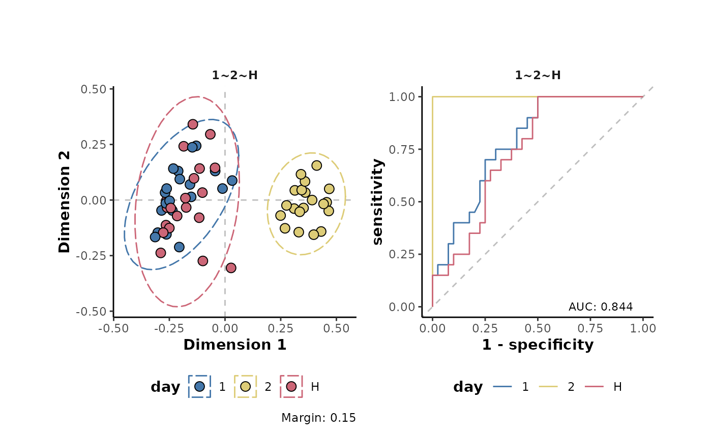